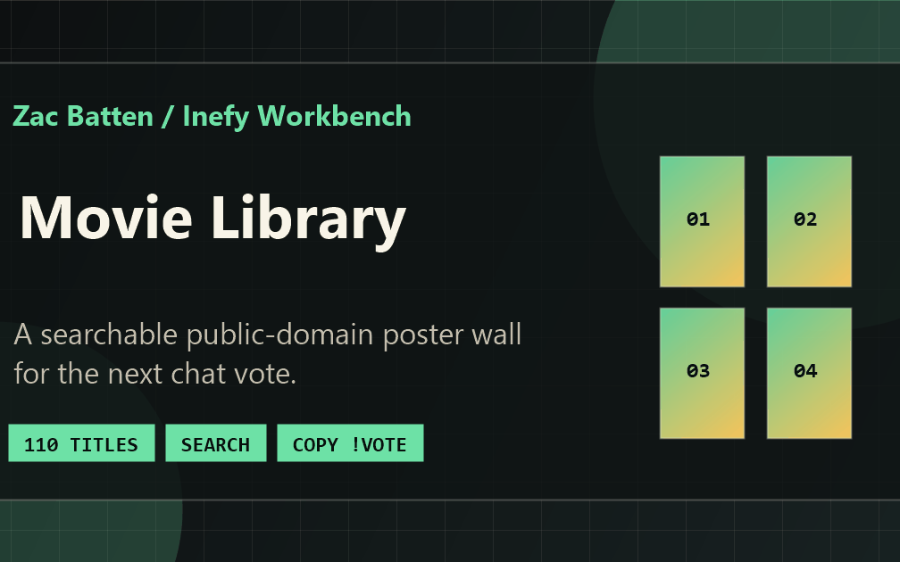

How it works
The bot scans the movie folder, counts votes, and sends the winner to OBS.
Case study
A Python bot that lets Twitch viewers vote for a movie and plays the winner in OBS.

What I built
Viewers vote in chat. The bot counts the votes and plays the winner.
The bot scans the movie folder, counts votes, and sends the winner to OBS.
Python, TwitchIO, OBS WebSocket, and automated tests.
It refreshes login tokens and reconnects when Twitch or OBS drops.
Quick summary
Python automation, stream tooling, command logic, and integration proof.
Python automation, Twitch/OBS integration, and tested command/state logic.
TwitchIO commands, vote state, ties, local scanning, OAuth refresh, reconnects, OBS handoff, and pytest.
Start with repo/tests, then scan architecture, OBS flow, and vote state. Movie Night and Library show viewer surfaces.
Runs locally beside OBS; readiness depends on secrets, config, local media, health checks, logs, operator controls, and live tests.
Try this demo
The bot runs locally. This path reviews viewer pages, command flow, source, and tests.

Visual proof
The screenshot shows the viewer catalog, not the Python runtime.
!vote commands.Project links
The repo documents runtime; Movie Night and Library show the viewer surfaces.
TL;DR
01 / Summary
MovieBot is a Python/TwitchIO control layer: chat updates vote state, local files provide the winner, and OBS WebSocket updates playback.
Chat, vote state, local files, Twitch auth, and OBS playback must stay coordinated.
The bot depends on Twitch OAuth/IRC, OBS WebSocket, local paths, and services that can disconnect.
I built commands, vote state, movie scanning, refresh/reconnect paths, and OBS handoff.
Local folders keep setup simple but less portable than hosted storage and operator controls.
Next: operator dashboard, connection health, vote/queue state, OBS status, and stronger integration tests.
Why this matters
Movie nights require voting, tallying, lookup, tie handling, and OBS changes while hosting.
The bot treats chat as input, keeps local state, and hands selected files to OBS with refresh/reconnect paths.
Shows integration work, async commands, reliability, API auth, file automation, and support pages.
Production readiness
Repo covers commands, vote changes, ties, scanning, OBS handoff, token refresh, reconnects, docs, and pytest.
Not a hosted service. Assumes local movies, OBS config, private secrets, and log monitoring.
For public use: dashboard, queue controls, integration tests, rate limits, logs, health checks, alerts, and recovery.
Tokens, OBS passwords, and media paths stay out of source. Production needs rotation, scoped permissions, moderation, and backups.
02 / What I built
External pieces: TwitchIO, Twitch OAuth/chat, OBS WebSocket, IMDb links, posters, and local public-domain files.
03 / Problem
Manual voting distracts the streamer: count votes, resolve titles, pick a winner, update OBS, and recover when services drop.
MovieBot turns chat into input and OBS into output. Viewers get predictable commands; the streamer gets repeatable handoff and logs.
04 / Viewer flow
!movies to see titles.
!vote <movie name>; exact or clear partial matches work.
!currentmovie, !time, and !results show state.
05 / Streamer/operator flow
python bot.py. Startup validates settings, tokens, movies, OBS, and schedule.
bot.log show OBS errors, token issues, chat recovery, and fallbacks.
06 / Tech stack
Python handles commands, background routines, chat, OBS playback, duration checks, and private env config.
07 / Twitch command flow
| Command | Behavior | Reliability detail |
|---|---|---|
!vote title |
Registers a vote for a matching movie during an active poll. | Rejects invalid votes and updates previous votes instead of double-counting. |
!results |
Shows current vote counts sorted by vote total and title. | Handles inactive poll and no-vote states. |
!currentmovie |
Shows the currently playing movie. | Reports when no movie is active. |
!time |
Shows total duration and remaining time for the current movie. | Uses recorded start time and duration. |
!movies |
Links to the public movie list when configured, otherwise lists the first available titles. | Keeps chat short while supporting the library page. |
!help |
Explains the available commands. | Sends delayed lines with a compact fallback. |
08 / OBS playback flow
Text fallback: TwitchIO routes chat to Python. The bot validates input, picks a local movie, updates OBS, and runs refresh/reconnect routines.
normalized_path = os.path.normpath(path)
settings = {"local_file": normalized_path}
set_settings_request = obs_requests.SetInputSettings(
inputName=MEDIA_SOURCE_NAME,
inputSettings=settings,
overlay=True
)
set_response = await self.safe_obs_call(set_settings_request)
if set_response is not None and await self._set_program_scene(SCENE_NAME):
if await self._restart_media_input(MEDIA_SOURCE_NAME):
return TrueTrimmed from public source; no local paths or credentials.
09 / Movie folder scanning
The bot scans configured movie folders for common video formats and one level of subdirectories, without following symlinks.
ffprobe, then MoviePy, then a default.10 / Vote changes and ties
Exact matches win first; ambiguous partial matches are rejected.
Each viewer owns one vote. Changing it decrements the old title and increments the new one.
Ties are random and announced. No votes can fall back to a random movie.
previous_vote_path = self.voter_data.get(user)
if previous_vote_path:
if previous_vote_path == selected_movie_path:
await ctx.send(f"@{user}, you already voted for '{selected_basename}'.")
return
if previous_vote_path in self.votes:
self.votes[previous_vote_path] -= 1
if self.votes[previous_vote_path] <= 0:
del self.votes[previous_vote_path]
self.votes[selected_movie_path] = self.votes.get(selected_movie_path, 0) + 1
self.voter_data[user] = selected_movie_pathTrimmed from public source for vote-change logic.
11 / Token refresh and reconnect behavior
Validates access tokens, refreshes near expiry, saves updates, and refreshes process env.
Checks IRC health, refreshes tokens, reconnects, and can hard reset TwitchIO after repeated failure.
OBS calls use connection checks, timeouts, failure marking, and reconnect attempts.
A generation counter prevents old callbacks from ending a newer movie.
If OBS fails to load a file, the bot clears votes, excludes the failed path, and tries another movie.
Shutdown cancels callbacks/tasks, stops routines, disconnects OBS, and closes TwitchIO.
12 / Setup and security notes
.env.example covers Twitch, movie directory, OBS, scene/source, and optional movie-list URL..env, tokens, secrets, passwords, or logs.MOVIE_DIRECTORY.13 / Deployment and run notes
The Python bot runs on the operator machine beside the movie folder and OBS. Support pages live on GitHub Pages.
Local .env: Twitch credentials, channel, movie directory, OBS config, scene/source, and optional movie-list URL.
Runtime uses TwitchIO/OAuth, OBS WebSocket, local movie files, and ffprobe/MoviePy. Support pages link to IMDb/posters.
Create a Python 3.8+ venv, install requirements, configure .env, run pytest, then python bot.py.
Never commit .env, tokens, secrets, passwords, logs, or media paths. Production adds rotation, scoped permissions, logs, health checks, and dashboard.
14 / Testing and QA notes
Public pytest checks cover config, scanning, token refresh, OBS calls, commands, scheduling, fallbacks, startup, and cleanup. GitHub Actions runs the suite.
tests/test_bot_logic.py covers scanning, durations, config, token helpers, OBS calls, commands, scheduling, fallbacks, startup, and cleanup.
GitHub Actions installs requirements and runs pytest.
Run with local movies and OBS config, send key commands, then confirm OBS updates the media source.
QA Movie Night embeds, Library search/copy, links, mobile layout, focus, and blocked-embed fallbacks.
Covers missing folders, ambiguous titles, changed votes, no-vote polls, ties, missing duration tools, OBS timeouts, stale callbacks, and reconnects.
No dashboard, CI-backed Twitch/OBS integration, synthetic E2E stream test, metrics, or alerting yet.
15 / Screenshots
16 / Next improvements

{kind=link}